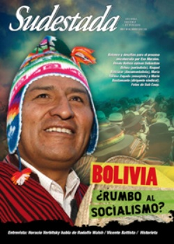

Buscar
Bolivia: ¿Rumbo al socialismo?
El triunfo electoral y el inicio del segundo período de Evo Morales abren paso a una profundización del proceso iniciado en 2006. Los caminos elegidos por el pueblo boliviano, la disputa entre diversos sectores por la hegemonía dentro del oficialista MAS, las contradicciones de un proyecto en disputa entre quienes pretenden agilizar los cambios y los que intentan modificar el rumbo, son algunos de los aspectos a analizar desde una mirada crítica. Desde Bolivia opinan Sebastián Ochoa (periodista), Raquel Balcázar (documentalista), María Teresa Zegada (ensayista) y Mario Bustamante (dirigente sindical). Fotos de Sub Coop.
Edición N° 86
Marzo 2010
Revista bimensual
Comprar edición impresaSumario
- Bolivia: ¿Rumbo al socialismo?
- Deuda y Rapiña
- La pasión según Rodolfo Walsh
- Bajo el manto negro del policial
- Teatro con espiritu de laboratorio
- Posada Carriles: El padrino del terror
Compartir Articulo
El Octubre boliviano: derrumbe de los partidos políticos "tradicionales" y ausencia de una dirección revolucionaria
El amanecer del viernes 17 de octubre de 2003, ninguno de los manifestantes que dormían atrincherados en las calles frías de la ciudad de El Alto se imaginaba que su valerosa lucha terminaría con la huida a Miami del repudiado presidente Gonzalo Sánchez de Lozada. Claro que primero sacaría unos cuantos millones de las reservas del Banco Central y dejaría tras él 65 muertos por balas del Ejército.
La insurrección de octubre de 2003 marcó un salto político importante de las masas bolivianas. La oposición a la exportación de gas por Chile a cargo del Consorcio Pacific LNG (conformados por la British Petroleum y la española Repsol-YPF) ponía de manifiesto el agotamiento del modelo neoliberal aplicado desde de los 80. La privatización de las empresas del Estado y la entrega de los recursos estratégicos del país a las transnacionales habían generado más pobreza. Los 500 mil empleos prometidos por Goni con la "capitalización" de las empresas de Estado nunca llegaron.
Del rechazo a la exportación de gas por Chile, el pueblo boliviano en las calles pasó a exigir el cierre del Parlamento y la renuncia de presidente asesino que había militarizado el país.
La avanzada revolucionaria de las masas y su eventual triunfo político con la expulsión de Goni tuvo como consecuencia el quiebre de los partidos políticos "tradicionales", que hasta el momento se habían sucedido en la administración del Estado. Eran el Movimiento Nacionalista Revolucinario (MNR), que se apoderó de la revolución de 1952; Acción Democrática Nacional (ADN), partido del ex dictador Hugo Banzer y el Movimiento de Izquierda Revolucionaria (MIR), que pese al nombre también era de derecha, entre otros.
Sin embargo, hubo una gran limitante para el avance del proceso revolucionario: el factor subjetivo. La dirección revolucionaria estaba ausente. La insurrección de octubre y su posterior desenlace dejaban esta realidad al desnudo. El valor y el coraje de las masas no fueron suficientes para ir más allá, hacia la estructuración de un nuevo Estado. El espontaneísmo y el instinto revolucionario no son suficientes para generar revoluciones. En semejante escenario, la salida lógica fue la sucesión constitucional y, posteriormente, el adelantamiento de elecciones.
Un indio presidente
Las elecciones generales de 2005 presentaban como candidato presidencial (por segunda vez) al dirigente cocalero Morales, con la sigla prestada del Movimiento al Socialismo (MAS), que no era más que un desprendimiento de la derechista Falange Socialista Boliviana (FSB).
Conducida la insurrección a las urnas, ausente una dirección revolucionaria y en un país con más del 60 por ciento de su población indígena, Morales captaría el apoyo mayoritario de un pueblo relegado y oprimido, que veía en el líder cocalero su reflejo. Fue así que –superando todo pronóstico– el MAS se impuso con el 53 por ciento de los votos. A pesar de que este partido no tenía un programa político claro, tuvo la audacia de saber cabalgar en el movimiento de masas, que una vez embridadas le condujeron al triunfo aplastante.
Después de una insurrección que había acabado con las viejas estructuras partidistas, y que a la vez había desafiado la institucionalidad del Estado burgués, el proceso revolucionario boliviano empezó a caminar sobre las vías del parlamentarismo: Asamblea Constituyente, referéndums, elección de prefectos. Las visitas a las urnas se sucederían una tras otra.
Comentarios
Sebatián Ochoa y Raquel Balcázar
Articulos más vistos


LIBRERÍA SUDESTADA

Colección infantil

Distribuidora de Libros

Suscripción

Sudestada en URUGUAY

Otros articulos de esta edición
La pasión según Rodolfo Walsh
De la investigación sobre el origen de la Triple A a las críticas enviadas a la conducción montonera. De la ...
 Entrevista con Vicente Battista
Entrevista con Vicente Battista
Bajo el manto negro del policial
A partir de la figura del comisario Evaristo Meneses, el escritor Vicente Battista propone en su novela Cuaderno del ausente ...
Posada Carriles: El padrino del terror
Un hombre famoso, con una vida dedicada a un solo objetivo, y reconocido por los círculos de poder de Estados ...
Teatro con espiritu de laboratorio
Compromiso y experimentación son dos conceptos arraigados desde su origen al Grupo Laboratorio de Teatro El Rayo Misterioso. En la ...
 Editorial
Editorial
Deuda y Rapiña
Resulta curioso observar que, más allá de un escenario mediático que deja traslucir confrontación y polémica, en un aspecto no ...